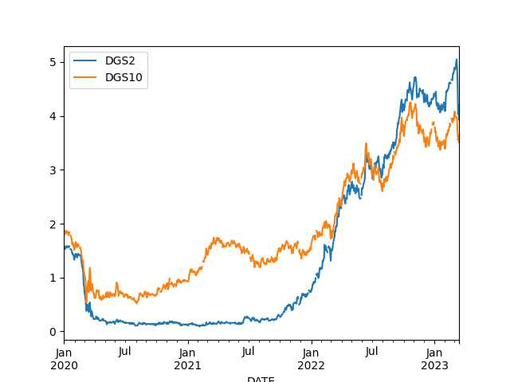
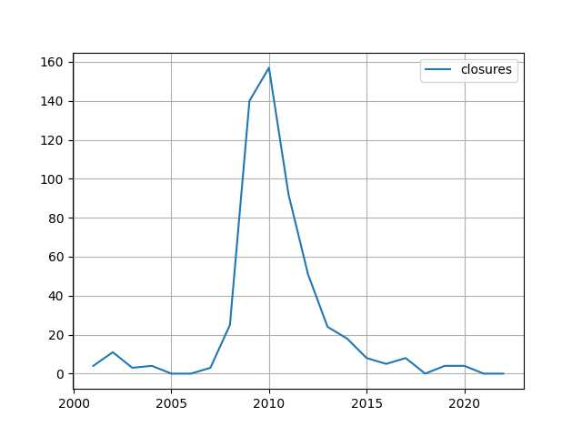

Week 11
"@TimmermansEU@respublicae.eu
RT @EUClimateAction: Renewable #Hydrogen can help us meet our climate goals.
Today, we have announced the European Hydrogen Bank, which will:
-
connect supply and demand across 🇪🇺
-
boost domestic uptake
-
expand production internationally"

#Assange
Tobi Morare - Starter #music
There are other analyses that say otherwise
"French pension reform is necessary, in-depth analyses suggest the current scheme is unsustainable"
Platformer says Twitter is down-ranking the corporate accounts of its competitors, Snap, Meta, and Instagram, "tweets from these accounts are not recommended to users who do not follow them, and won't show up in their For You tab". More oversight needed? Shady shit ..
There he is, the best friend
![[-]](../2022/ejagoffcyber.jpg){kind=link}
Peter Thiel banked there. Did you create a bank run, Focker?
SVB was offering up to 4.5% yield on deposits before it collapsed.. Wow
2-Year does look little better than 10-year, but not by much.. if bought in 2020, SVB would still be in trouble.
df = u.get_fred(2020,['DGS2','DGS10'])
df.tail(4); df.plot()
DGS2 DGS10
DATE
2023-03-10 4.60 3.70
2023-03-13 4.03 3.55
2023-03-14 4.20 3.64
2023-03-15 3.93 3.51

All bond yields went up, their prices went down, so if you had to sell bonds at a hurry had to sell sell them at a loss.
"One refrain we’ve heard lately is that Silicon Valley Bank failed because it took risks that turned sour. The specific kind of risk in the limelight right now is what’s known in financial circles as duration risk... The bank was flooded with deposits after the start of the pandemic, and it invested a large chunk of them in long-term government bonds and mortgage-backed securities, which paid a higher yield than short-term Treasuries. 'Had they invested in two years or less, they would have taken a much smaller hit,' he said.. Worth noting, SVB’s losses were only on paper — that is, until the bank needed to offload those bonds quickly as depositors rushed for the exits"
Euractiv: "Construction sector bets on EU green buildings law as new growth engine.. Revamping Europe's building stock is not only expected to reduce energy bills and help tackle climate change, it is also widely supported by the construction sector, which sees a business opportunity in renovation"
"First Truck with Dual Fuel Hydrogen-Diesel Combustion Launched in Oman"
"@Hypx@mastodon.social
1,000 km hydrogen pipelines are under construction in China"
SW is the Die Linke "rebel" mentioned earlier.
"@sahra_wagenknecht@social.linksfraktion.de
There is an obligation under international law to #negotiate [per UA/RU conflict], says ex-UN diplomat von der Schulenburg. If it is argued today that a #peace can only be achieved by force of arms, this is a throwback to warlike times before the UN Charter"
"Worley [UK] secures contract for East Coast Hydrogen project, Project to deliver 10 GW of hydrogen into the network"
#GIF #Trek
Feb inflation fell
2023-01-01 6.410147
2023-02-01 6.035613
Linus in the house. All Hail Linus
"@torvalds@social.kernel.org
Random first trial post: today, March 14th, is the 29th anniversary of the Linux 1.0 announcement.
Of course, there are other arguably more important dates in Linux history, but this is one of them"
The Atlantic: "Boycott Bans Are an Assault on Free Speech.. America began with boycotts. Angry about Britain’s tax raises, the historian T. H. Breen writes, American colonists saw their refusal to purchase British goods as a 'reflexive response to taxation without representation'..
I think what’s really offensive about the anti-BDS laws in particular is the way that they single out not even boycotts generally, but on this one specific issue for special penalties—I think that really gives the game away that the government is trying to suppress specific viewpoints here,” Brian Hauss, an attorney for the ACLU, which challenged the Arkansas law and several others like it, told me"
Updates on da map.
Africa News: "'In 2021, when the presence of the private military company Wagner was increasingly intrusive in [Central African Republic], France considered that the conditions were no longer met for us to continue working for the [CAR] armed forces,'.. commander of French forces in Gabon, told AFP"
Holywood's obsession with the multiverse concept is likely for gaslighting, distraction.. MV creates an illusion of a "multiplicity of options", regular citizen might be suffering in real life, but then goes to a movie theater watches a "multiverse movie" and starts feeling good about himself.. Maybe there is another him out there in a parallel world who is better off? Add little time travel future him can time travel to his old (current) self and help him (creating "new branches" in the MV too bro, but it's all good). So many options... Intoxicating. Poor person does not know where to start. I guess with so many options his current sorry state is his fault, which could be the main point of the exercise. Psyop.
H2 Central: "China Energy to Start Establishing $5,1bln Green Hydrogen Plant in Egypt in May"
"@hollie@social.coop
Picked up [son] at school and on our way to grab coffee we saw the best window sticker"
![[-]](https://social-coop-media.ams3.cdn.digitaloceanspaces.com/media_attachments/files/110/017/855/821/117/315/small/2aeaf3eb442b578c.jpeg){kind=link}
"@cassidoo@notacult.social
A wise QA dev once said, 'There is no I in team, but there is a u in bug'"
NYT: "Inside the Global Race to Turn Water Into Fuel..
A consortium of energy companies led by BP plans to cover an expanse of land eight times as large as New York City with as many as 1,743 wind turbines, each nearly as tall as the Empire State Building, along with 10 million or so solar panels and more than a thousand miles of access roads to connect them all. But none of the 26 gigawatts of energy the site expects to produce, equivalent to a third of what Australia’s grid currently requires, will go toward public use. Instead, it will be used to manufacture a novel kind of industrial fuel: green hydrogen. This patch of desert, more than 100 miles from the nearest town, sits next to the biggest problem that green hydrogen could help solve: vast iron ore mines that are full of machines powered by immense amounts of dirty fossil fuels. Three of the world’s four biggest ore miners operate dozens of mines here.Proponents hope green hydrogen will clean up not only mining but other industries by replacing fossil fuel use in steel making, shipping, cement and elsewhere..
Last year, government subsidies sped up action in the European Union, India, Australia, the United States and elsewhere. The Inflation Reduction Act, the Biden administration’s landmark climate legislation, aims to drive the domestic cost of green hydrogen down to a quarter of what it is now in less than a decade through tax incentives and $9.5 billion in grants. 'We are about to jump from the starting blocks,' said Anja-Isabel Dotzenrath, who once led Germany’s biggest renewable energy company and now runs BP’s gas and low-carbon operations. 'I think hydrogen will grow even faster than wind and solar have.'"
Al Monitor: "Israeli leaders trade accusations over Saudi-Iran rapprochement via China.. Coalition and opposition leaders are trading accusations over which government is to blame over the relations-renewal deal between Tehran and Riyadh"
H2 Central: "Bloom Energy fuel cells successfully used aboard cruise ship"
GP is the current, and the first left-wing President of Columbia, also former mayor of Bogota.
Gustavo Petro: "A developed country is not a place where the poor have cars. It's where the rich use public transportation."
For Prez elections the ultimate Hail Mary was from the Rep side during the 2000 election. I don't mean to downplay the skills of other campaigns who also won... Maybe they too had it in them to snatch a win out of the lion's den, just snatching that shit, snatching it and going home with the trophy.. Maybe. But we didn't see those campaigns, we almost exclusively saw the ones who won with an advantage. I need to base the take on data.
Previous share on AI+ethics debate is similar in spirit to AI+doomsday debate. In both cases the underlying assumption / message is the tech is that good. It's a good trick, sales-by-presumption. If A implies B develop arguments as if B is already true, which telegrams A is a done deal. These c--suckers are always selling...
Taxpayers are absolutely on the hook for SVIB bailout. Gov covered not just some, but all depositors; and the bank's total deposits reach over $170 billion - no pocket change.
But if gov works the books, spreads the damage forwards can reap some if not all loss... it's possible.
The first AUKUS announcement was happier, snappy, woo hoo we are on top of the world baby..! This one looks more sad, dour. Two of the three figures have low approval ratings, one is certainly on the way out. The war in Ukraine is not going well for the "Rules-Based Order" and the opposition is coalescing.
"@Floofer@mk.catgirlsfor.science
A pizza is basically a real life pie chart that shows the amount of pizza left"
H2 Central: "West Virginia Hydrogen Hub Coalition Applauds Appalachian Hydrogen Hub’s Continued Success.. Senator Manchin said: 'West Virginia and Appalachia have a long history of powering our great nation, and I am pleased the Appalachian Regional Clean Hydrogen Hub’s tireless efforts have been rewarded by the Department of Energy'"
Mozilla Mastodon instance is up
Need to stress the approach can fail sometimes
Seeking Alpha: "1953 and 1957 [recessions], were not preceded by yield curve inversions. So this concept is not perfect by any means"
"The curve" has indeed inverted (longer maturity treasuries have lower yield than shorter ones) which some take as a signal of recession.
DGW Magazine: "Engine maker INNIO plans to convert a German power plant to 100% green hydrogen by 2035"
Euractiv: "Germany ‘not opposed’ to nuclear-made hydrogen, says will import from France"
Some banks need to fail, it is a sign the system is punishing bad management. See the plot below, # of bank bankruptcies per year, data from FDIC. Notice the two years when there were zero bank closures. 2005, and 2006. What happened afterwards? 🤔
url = 'https://www.fdic.gov/bank/historical/bank/bfb-data.csv'
df = pd.read_csv(url,parse_dates=['Closing Date'])
df['year'] = df['Closing Date'].dt.year
dfg = pd.DataFrame(index=range(2001,2023))
dfg['closures'] = df.groupby('year').size()
dfg.fillna(0).plot(grid=True)

"@joeyh@octodon.social
[Y Combinator] posted a petition to get a goverment bailout for SVB, and the #HackerNews post for it attracted so many people telling them to go jump in a lake that YC flagged it right off their own website"
Ng is a Stanford prof, taught deep neural nets for many years. DNNs are okay for limited, well-defined, focused use.. But notice the subtext - ain't gonna get no AGI with them neural nets.
Reshare 2018.
"@AndrewYNg
AI+ethics is important, but has been partly hijacked by the AGI (artificial general intelligence) hype. Let's cut out the AGI nonsense and spend more time on the urgent problems: Job loss/stagnant wages, undermining democracy, discrimination/bias, wealth inequality"
"Brookings’s Aaron Klein argued that total avoidance of bank failure is not necessarily a good thing, as some banks that make bad business model decisions deserve to fail"
"@wallstcynic
The chutzpah here beggars belief. The VC 'community' literally started the SIVB run on Thursday, when it urged its portfolio companies to pull their deposits.. which they did ($42B). And they now want the Taxpayer to bailout their investments…?!"
Come to Butthead #music
I could improve the visuals, or.. I could just steal Github Pages template. Boom.
For the backup site I generate the visual pages (HTML) from raw content,
using Python markdown pkg.
H2 Central: "German hydrogen firm Thyssenkrupp Nucera (TKAG.DE) has seen customer interest soar in the U.S. as a result of the Inflation Reduction Act (IRA) and may create local production capacity with Italy’s De Nora (DNR.MI) if the market takes off.
Thyssenkrupp Nucera held talks about several potential green hydrogen projects 'with very concrete timelines' during a trip to the United States last week, Chief Executive Werner Ponikwar said in an interview"